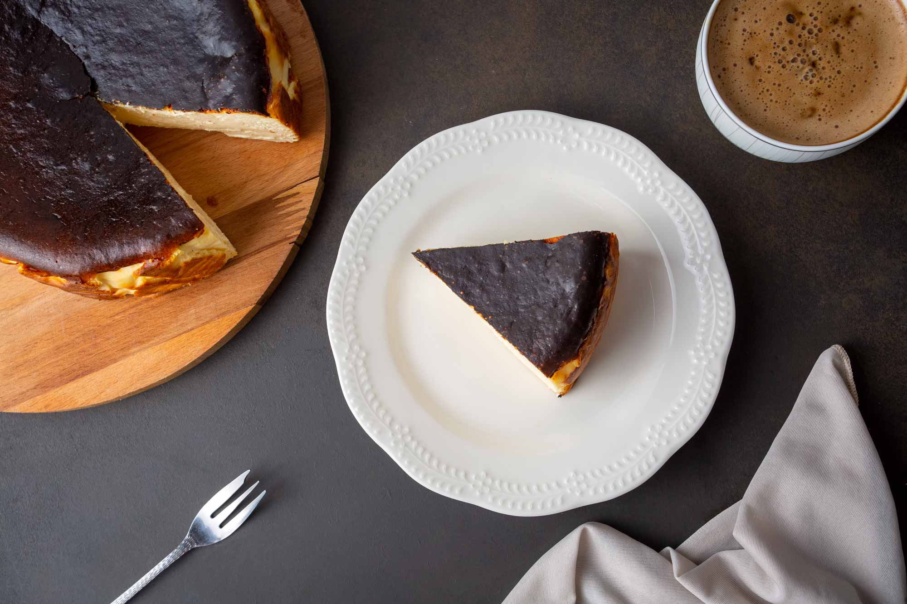

San Sebastian Cheesecake

KALORİ: 1 porsiyon için 553/kcal
8 Kişilik
Gerekli Malzemeler
- 4 adet yumurta
- 2,5 su bardağı pudra şekeri
- 400 gram krem peynir (oda sıcaklığında)
- 400 gram labne peyniri
- 150 gram kaymak
- 1 su bardağı krema
- 4 yemek kaşığı un
- 1,5 yemek kaşığı nişasta (mısır veya buğday nişastası)
Hazırlanışı
- Fırını 240 dereceye ayarlayın. Yumurta ve pudra şekerini büyük bir karıştırma kasesinin içerisine alın. Mikser yardımıyla şeker güzelce eriyene kadar 5-6 dakika kadar çırpın.
- Ayrı bir kasede krem peynir, kaymak ve labne peynirini çırpın. Üzerine krema, un ve nişastayı ekleyip düşük ayarda tekrar çırpın. Dilerseniz bu aşamada vanilya da ilave edebilirsiniz.
- Son olarak yumurtalı karışımı labneli karışımın üzerine ilave edin ve spatula yardımıyla alttan üste doğru güzelce karıştırın.
- 23 cm'lik bir kelepçeli kalıbın içerisine çift pişirme kağıdı yerleştirin. Üzerine karışımı ilave edin ve üzerini düzeltin.
- 240 derece fansız ayarladığınız fırında 15 dakika üzerini kızartın. Ardından fırının derecesini 200 dereceye düşürün ve 20 dakika daha pişirin.
- Piştikten sonra fırını kapatın ve kapağını hafif aralayıp minimum 20 dakika kadar ilk sıcaklığının geçmesini bekleyin. Ardından çıkarıp oda sıcaklığında soğumaya bırakın.
- Oda sıcaklığında dinlendirdikten sonra en az 8 saat, tercihen 1 gün dinlendirin. Yağlı kağıdını da çıkarıp dilimleyerek servis edin. Üzerine çikolata sosu ya da meyve sosu da gezdirebilirsiniz.
Afiyet olsun!